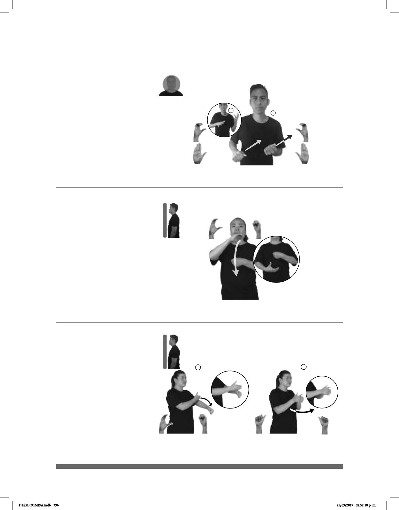

396
1
2
Abandonar (C-1)
pro-ÉL DESEAR él-CONQUISTAR-a-ella MUJER PERO MIEDO pro-ELLA
ABANDONAR
Él desea conquistar a una mujer, pero tiene miedo de que lo abandonen.
Seña: SB
MD y MB seña que
pasa de C.7 a B-P.2
MD la palma inicia hacia
adentro y termina oblicua hacia arriba y
hacia adentro. MB la palma inicia hacia
adentro y termina hacia arriba.
La MD inicia sobre la
frente y termina a la altura de la frente.
MB inicia sobre la barbilla y termina a
la altura de la barbilla.
Las manos se mueven
formando un arco hacia el frente.
v. tr. Dejar algo o alguien
sin cuidado o sin atención.
Seña: SC: I. SB; II. SS
I. MD C.1, MB
S.1; II. A.1
I. MD palma
hacia adentro. MB palma
hacia la derecha; II. Las palmas se
encuentran frente a frente.
I. La MD inicia sobre
la sangradura y termina sobre la
muñeca de MB. MB a la altura del
abdomen; II. A la altura del pecho.
I. La MD simula un
salto; II. Recto hacia enfrente.
v. tr. Estar o ir en
compañía de otra u otras personas.
(C-3)
MAÑANA TRABAJO dm-JUAN pro-YO pro-NOSOTROS-DE-DOS ACOMPAÑAR
Mañana Juan y yo nos acompañaremos al trabajo.
(C-2)
ESTE PELÍCULA ACABAR
Se acabó la película.
Seña: SB
MD C.3, MB S.1
MD la palma
inicia hacia abajo y termina hacia
arriba. MB palma hacia adentro.
MD del cuello a la
cintura. MB a la altura del pecho.
La MD se mueve
formando un arco por delante de
MB.
alguna cosa; terminarla o
concluirla.
DLSM COMISA.indb 396 25/09/2017 02:52:18 p. m.